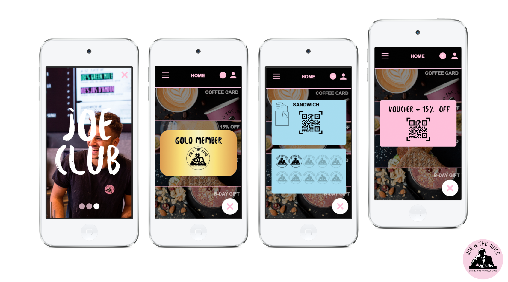

I virksomhedscase-opgaven kom vi i grupper endnu engang. Jeg var med Marie, Andreas, Emil og Celina. Opgaven lød på at udvikle en prototype feature til Joe and the Juice´s kunde-app. Vi skulle lave en prototype til en app med funktionaliteter, som styrker kundens købsoplevelse, så de ønsker at vende tilbage til Joe and the Juice. Herved skulle vi anvende en række af de teorier, værktøjer og metoder, vi har været igennem i løbet af de seneste ugers undervisning. Dokumentationshjemmesiden kan ses her
Dokumentationshjemmesiden LINK PROTOTYPE LINK PITCH LINKVi begyndte med brief style tile, NABC-modellen, målegruppebeskrivelse og persona. Her er mine eksempler: Business modellen (The Business Model Canvas), så vi fik styr på selve featuren, og hvordan den ville fungerer rent forretningsmæssigt.
Joe Club appen skal bruges som en app, hvor brugeren har et eksklusivt medlemsskab hos Joe an the Juice. Her har brugeren mulighed for at købe loyalty cards på deres forskellige produkter. Appen opbevarer brugerens loyalty cards online, hvilket gør dem let tilgængelige. Udover dette har brugeren mulighed for at modtage specifikke invitaioner til forskellige arrangementer, alt efter graden af deres medlemskab (pink, black og gold medlemskab). Brugeren optjener point alt efter, hvor mange loyalty cards de køber, og penge de bruger i Joe and the juice. Dette udløser forskellige vouchers, rabatter og andre goder, brugeren kan benytte sig af i de forskellige Joe and the Juice butikker.
